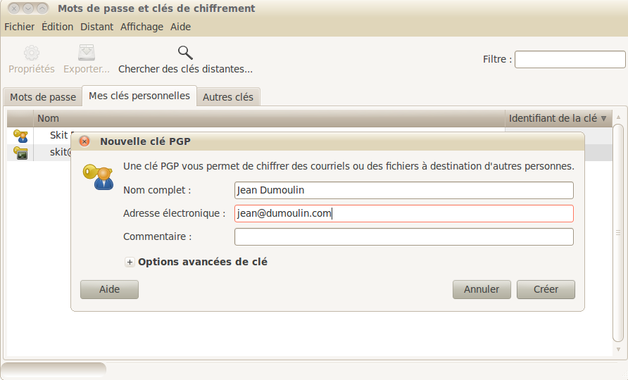
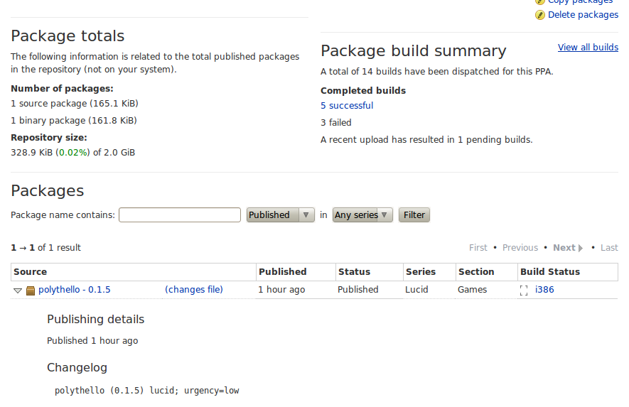

Ça y est ! Votre œuvre est désormais terminée, vous avez réussi à vous débarrasser des dernières anomalies et voilà que se pose une question cruciale : que faire pour diffuser votre programme le plus largement possible ?
Eh oui, ce n'est pas tout de créer un programme qui va révolutionner la vie des gens, encore faut-il qu'ils y aient accès. Ce tutoriel tâchera de résoudre ce problème en vous permettant de créer votre propre dépôt afin de laisser vivre votre programme. ^^
Nous utiliserons Launchpad. Des notions de shell seront nécessaires (cf. le tuto de M@teo21) mais également la notion de ce qu'est un paquet .deb (cf. le tuto de outadoc).
Je vous conseille également d'installer avec apt-get les paquets suivants :
C'est bon ! Votre choix est fait, vous allez bénéficier de ce que peut offrir votre propre dépôt Launchpad. Launchpad vous permettra de mettre à disposition vos sources, compilera pour la release 32 ou 64 bits d'Ubuntu (nous travaillerons d'ailleurs sur Ubuntu Lucid Lynx 10.04) et les rendra disponibles 24 heures sur 24 avec la possibilité de faire une mise à jour depuis apt-get… votre propre dépôt en somme. ^^
Pour ce faire, il faudra d'abord obtenir une clé de cryptage qui vous est propre en tant que développeur. Elle servira, entre autres, à signer vos paquets et à valider votre compte Launchpad.
Nous allons générer une clé sous Ubuntu.
Rendons-nous dans Applications › Accessoires › Mots de passe et clés de chiffrement. Une fois la fenêtre ouverte, vous pourrez cliquer sur l'onglet Mes clés personnelles. Puis vous cliquerez en haut dans Fichier › Nouveau et sélectionnerez Clé PGP.

Saisissez donc vos informations personnelles (comme ci-dessus), et lancez la création de la clé. Elle se trouvera ensuite dans la liste de vos clés personnelles.
Merveilleux ! Votre clé a été générée mais pour l'instant, seul votre PC la connaît. On va donc synchroniser la liste de clés avec le serveur pour lui signaler qu'on a créé une nouvelle clé et qu'on aimerait bien qu'il la reconnaisse. Allez dans la barre du haut et cliquez sur Distant › Synchroniser et publier des clés.
Et voilà, en principe, après une petite attente, tout devrait être fonctionnel… du moins pour la clé !
Zut, on n'y est pas encore… :euh: Mais à présent, on peut s'authentifier auprès de Launchpad et s'attaquer à la création du compte : il faut maintenant se rendre sur le site de Launchpad et créer son compte en cliquant en haut à droite, sur Register.
Cliquez ensuite sur Create new account et renseignez les informations demandées. La suite de la création du compte ne devrait pas vous poser de gros problèmes. Passons ensuite à l'importation de la clé PGP.
En retournant dans Mots de passe et clés de chiffrement, nous pourrons accéder à l'empreinte de la clé. Pour ce faire, clic droit Propriétés › Détails et il ne vous reste plus qu'à copier la liste de caractère sous empreinte.
Rendez-vous sur votre page Launchpad, après vous y être connecté. Vous devriez voir un lien, sous openPGP keys, vous invitant à rajouter votre clé. Ajoutez la fingerprint qui est l'empreinte de votre clé. Launchpad va alors questionner le serveur d'Ubuntu pour savoir si votre clé est valide. Si vous rencontrez un problème, vous avez peut-être oublié de synchroniser votre clé.
Maintenant, un petit saut vers la messagerie s'impose ! Un mail devrait être arrivé de leur part, charmante intention, mais… mais c'est incompréhensible ! o_O En fait, le contenu que vous voyez là est crypté et seule votre clé pourra le décrypter.
Copiez-collez le mail dans un fichier texte. Lancez votre terminal et placez-vous dans le dossier où se trouve votre fichier. Ensuite, écrivez cette commande :
gpg --decrypt monMail.txt
Et voilà, les explications sont à présent tout à fait compréhensibles. Vous pouvez maintenant suivre les instructions pour valider votre clé auprès de Launchpad. ;)
De retour sur votre page Launchpad, vous allez signer le code de conduite d'Ubuntu en suivant simplement les étapes. À noter que, pour signer avec votre clé, vous devrez utiliser l'option --sign puis leur renvoyer le code de conduite et la signature.
Pfiou ! Voilà qui est enfin fait. Nous venons de créer notre compte Launchpad et tout est désormais prêt pour y mettre nos programmes sauf peut-être… les programmes. :(
Amorçons déjà la partie suivante ; vous pouvez créer un nouveau PPA en cliquant sur Create a new PPA dans Personal Package Archives. La Personal Package Archive sera un petit coin où vous pourrez mettre tout ce qui est relatif à un projet : des binaires, un fichier source, des informations et le tout avec une URL. Vous pouvez en créer pour chacun de vos projets mais, partant du fait que vous êtes sur Launchpad pour la première fois, on va se contenter d'un seul et unique projet. :-°
Partie amusante du tutoriel, nous allons créer une architecture Debian dans notre dossier afin de guider Launchpad quand il fabriquera les .deb. Le but sera donc de créer un paquet source.
Architecture « Debian » ? Mais nous ne sommes pas sous Ubuntu ? o_O
Évidemment, mais Ubuntu est une dérivée de Debian, tout comme Debian est une dérivée de Linux. L'architecture étant semblable, ce tutoriel peut servir à des personnes réalisant des versions pour Debian ou Knoppix. Comme je l'ai dit plus haut, lisez le tutoriel d'outadoc pour fabriquer des .deb, ça vous permettra de mieux comprendre ce que nous allons faire ici, qui est un peu plus compliqué.
En effet, quand vous créez une archive Debian, il suffit de préciser où vous voulez chaque fichier, quelques fichiers intéressants (changelog, readme, control, etc.) et l'installeur disposera tout correctement sur l'ordinateur de l'utilisateur. Oui mais, pour nous, c'est Launchpad qui va créer le ce fichier. On va donc devoir lui montrer comment il doit créer ces fichiers. Le gros point positif, c'est que Launchpad est suffisamment bien équipé pour compiler dans les environnements que vous souhaitez. Vous pourrez ainsi, par exemple, obtenir une version 32 bits et une version 64 bits pour Ubuntu Lucid Lynx.
C'est d'ailleurs — curieusement — ce que nous allons faire… :-°
Créez ou choisissez un dossier où travailler, car c'est parti ! :p Dans celui-ci, vous allez créer trois dossiers : debian src datas. Attention à la casse !
datas sera le dossier dans lequel nous retracerons l'architecture d'Ubuntu en ne plaçant que les dossiers nécessaires ;
debian sera le dossier où nous placerons les règles de fabrication du paquet .deb ainsi que les sources, vu que nous les voulons disponibles sur Launchpad ;
enfin, src sera le dossier dans lequel nous mettrons les précieuses sources du programme pour Launchpad.
Ouvrons d'abord src : vous devez créer un dossier par exécutable (surtout parce que c'est plus propre et que ça vous facilitera l'écriture du Makefile ^^ ). J'imagine que vous n'en êtes pas à des programmes qui nécessitent une dizaine de binaires donc vous n'en créerez qu'un. Le mien s'appelle monProgramme.
Ce dossier contiendra tout ce qui est nécessaire à la compilation. Vos sources, en somme.
Rendons-nous à présent dans le dossier debian. Dedans, vous devez créer un dossier source.
Une fois cette petite broutille faite, nous pouvons faire un saut dans le dossier datas. Nous allons y reproduire exactement ce qui nous intéresse pour le fonctionnement. Ce que je présente ici est évidemment minimal. Libre à vous d'en faire davantage si vous vous sentez créatif ou que votre programme l'exige.
On commence par créer un dossier usr dans lequel on placera les dossiers binet share. Le dossier bin est important. Il contiendra le fichier qui sera appelé par le programme quand nous taperons son nom. Comme dans le terminal lorsque vous tapez
vlc
Et une fenêtre VLC s'ouvre.
Rien de bien magique à tout cela, le secret se cache dans le dossier bin.
Dans le dossier share, nous ajouterons notre programme à la barre dans la liste des Applications. Nous allons créer un dossier applications étant donné que nous souhaitons l'y faire apparaître. Dans ce dossier, je vais créer un fichier, à l'aide de vim, qui se nommera monProjet.desktop et qui permettra son lancement. Dans ce fichier, je vais rentrer ceci :
[Desktop Entry]
Version=0.1.0
Encoding=UTF-8
Name=monProjet
GenericName=monProjet
Comment=monProjet est un jeu video
Exec=/usr/share/monProjet/monProjet
Icon=/usr/share/pixmaps/monProjetIcon.png
Terminal=false
Type=Application
Categories=Application;Game;
Name[fr_FR]=monProjet
Quelques éclaircissements s'imposent :
Version est en fait la version de mon projet, soit 0.1.0 ;
Encoding est simplement l'encodage du fichier. Évidemment, mon jeu est en UTF-8 afin de bien gérer les accents ; ^^
Exec est la commande à exécuter pour lancer le programme depuis le dossier : il s'agit de monProjet dans /usr/share. C'est en fait le nom du fichier compilé que nous mettrons dans le dossier bin ;
Icon est l'adresse de la petite icône qui symbolisera le jeu. Je ne vous en ai pas encore parlé mais on s'en charge juste après. Vous pouvez tout de même remplir ce champ à l'avance ; ;)
Categories permettra de situer le jeu ; je le place dans les applications › les jeux. Observez les autres desktop pour vous forger une bonne idée des autres noms de catégories. ;)
Je pense avoir précisé les points les plus difficiles à comprendre, à vous de créer le fichier selon vos besoins. Nous sommes donc toujours dans share et nous allons créer le dossier pixmaps dans lequel nous placerons notre monProjetIcon.png. Le format .png n'est pas obligatoire pour autant.
Le dernier des dossiers à placer dans share sera le dossier monProjet dans lequel vous pourrez placer les fichiers éventuellement utiles à votre programme (vidéos, plugins, textures, etc.) en n'oubliant pas de faire en sorte que votre programme aille les chercher là où ils se trouvent effectivement.
Bien ! Les dossiers sont créés. Pfiou, c'est un peu fatigant tout ça. :euh:
C'est tout à fait normal, on fait ici un premier projet. Une fois tous les fichiers correctement créés, ce sera plus simple de faire une petite mise à jour. Et dire que dans les gros projets, il y a des gens dont c'est la spécialité de faire ça. :o
À présent que les dossiers sont faits, nous allons nous attaquer aux fichiers nécessaires pour le .deb ! ^^
Partie intéressante, bien que connue de ceux qui savent déjà faire des .deb, nous allons configurer les fichiers pour bien expliquer comment on veut que tout ça soit mis. Ce ne sera pas bien compliqué. ^^
Tout d'abord, où allons-nous mettre ces fichiers ? Dans le dossier debian bien sûr ! Comme je l'ai dit, ce dossier permettra à dpkg d'avoir tout en main pour faire le .deb. Mais vous ne vous souciez pas de dpkg, c'est le problème de Launchpad de savoir comment il fonctionne. Vous devez juste lui donner ce dont il a besoin pour fonctionner.
Dans debian, nous allons créer un fichier changelog :
monProjet (0.1.0) lucid; urgency=low
* Initial Release.
-- Jean Dumoulin <[email protected]> Sun, 15 May 2011 08:22:49 +0200
Ce fichier comporte simplement les dernières informations sur le package :
son nom (qui est monProjet) ;
sa version (qui est 0.1.0) ;
la version compatible qui, dans ce cas, est Lucid car nous travaillons sur la dernière version d'Ubuntu ;
l'urgency est une propriété pour que Launchpad estime la priorité de construction du package. On n'est pas à une heure ou deux près (selon le temps et les ressources en place, Launchpad peut prendre une demi-journée pour lancer ça) donc low est très bien ;
un petit commentaire sur les changements : on sort la première release ;
votre nom et votre adresse mail, ainsi que la date.
Voilà, changelog a toutes les infos. Le plus important, pour permettre au serveur de comparer les infos, est surtout la ligne contenant le nom, la version et la distribution évidemment (même s'il pourrait ne pas créer votre paquet s'il manque des informations).
On crée ensuite un fichier control :
Source: monProjet
Section: games
Priority: optional
Maintainer: Jean Dumoulin <[email protected]>
Build-Depends: debhelper (>= 7), qt4-qmake, libqt4-opengl-dev, libqt4-dev
Standards-Version: 3.8.3
Homepage: https://launchpad.net/~jeandumoulin/+archive/monProjet
Package: monProjet
Architecture: any
Depends: libqt4-opengl,libqtgui4,libqtcore4
Description: mon jeu fait par moi
C'est un jeu merveilleux auquel chacun devrait jouer.
Pour la suite, rien de bien compliqué :
la source (ici, on développe monProjet) ;
la section qui, dans mon cas, est games ;
la priorité qui est l'importance de la mise à jour du paquet ;
le maintainer qui contient toujours vos informations ;
les build-depends qui représentent le nécessaire pour que Launchpad puisse compiler. Dans mon cas, j'utilise Qt et Qt-openGL, j'indique donc les libraries de développement : qt4-qmake pour permettre de générer le qmake, libqt4-opengl-dev pour tout ce qui implique openGL sous Qt, libqt4-dev qui contient les fonctions Qt.
Rien de bien compliqué jusqu'à Architecture où, avec any, vous spécifiez que vous souhaitez que votre programme soit compilé sur toutes les architectures. Les Depends seront les dépendances nécessaires à l'utilisation, et non pas à la compilation, donc pas de -dev ou de -devel.
Un dernier détail : pour la Description, la première ligne est une description courte puis, en allant à la ligne, vous pouvez en écrire une plus longue.
Passons à copyright :
This work was packaged for Debian by:
Jean Dumoulin <[email protected]> on Sun, 15 May 2011 08:22:49 +0200
It was downloaded from:
https://launchpad.net/~jeandumoulin/+archive/monProjet
Upstream Author(s):
Jean Dumoulin <[email protected]>
Copyright:
<Copyright (C) 2011 Jean Dumoulin>
License:
GNU General Public License v3.0
On Debian systems, the complete text of the GNU General
Public License version 3 can be found in `/usr/share/common-licenses/GPL-3'.
The Debian packaging is:
Copyright (C) 2011 Jean Dumoulin <[email protected]>
and is licensed under the GPL version 3,
see `/usr/share/common-licenses/GPL-3'.
Rien de très compliqué pour ce fichier. Si vous ne souhaitez pas de licence GPL ou, plutôt, une licence LGPL, libre à vous de l'éditer en conséquence.
En remontant à la racine de votre projet, vous pouvez également créer les fichiers README, INSTALL, COPYING, AUTHORS et NEWS mais leur création ne fait pas partie du tutoriel et ces fichiers ne sont qu'informatifs pour les utilisateurs.
À noter que vous pouvez également générer ces fichiers puis les modifier vous-mêmes grâce à la commande dh_make dont je vous conseille de lire la documentation. Faites attention : l'arborescence des dossiers ainsi que leurs noms ne seront pas vraiment corrects, et il faudra donc les modifier.
Tout ça, c'est bien joli mais tu m'avais dit que Launchpad compilait mon code source. On n'a encore rien fait pour qu'il le fasse… :euh:
C'est vrai, nous avons surtout travaillé sur le paquet debian qu'il va générer. Nous allons donc, à présent, nous attaquer à l'installation. ^^
Quelle horrible question que de savoir comment faire en sorte que Launchpad compile de lui-même et fasse une installation. C'est parce que cette partie est peu documentée que je me suis motivé à faire ce tutoriel. Il m'aura fallu des semaines pour trouver comment faire mais, à présent, je vais pouvoir vous expliquer tout ça. ^^
Il n'y a rien de bien compliqué mais, comme toujours, il suffisait d'y penser ! :-°
Commençons par créer un fichier config.ac à la racine :
# -*- Autoconf -*-
# Process this file with autoconf to produce a configure script.
AC_PREREQ([2.65])
AC_INIT([monProjet], [0.1.0], [[email protected]])
AM_INIT_AUTOMAKE([readme-alpha])
AC_CONFIG_SRCDIR([config.h.in])
AC_CONFIG_HEADERS([config.h])
# Checks for programs.
AC_PROG_CC
# Checks for libraries.
# FIXME: Replace `main' with a function in `-lappindicator':
AC_CHECK_LIB([appindicator], [main])
# FIXME: Replace `main' with a function in `-lcairo':
AC_CHECK_LIB([cairo], [main])
# FIXME: Replace `main' with a function in `-lfontconfig':
AC_CHECK_LIB([fontconfig], [main])
# FIXME: Replace `main' with a function in `-lfreetype':
AC_CHECK_LIB([freetype], [main])
# FIXME: Replace `main' with a function in `-lm':
AC_CHECK_LIB([m], [main])
# FIXME: Replace `main' with a function in `-lnotify':
AC_CHECK_LIB([notify], [main])
# FIXME: Replace `main' with a function in `-lpng12':
AC_CHECK_LIB([png12], [main])
# FIXME: Replace `main' with a function in `-lpthread':
AC_CHECK_LIB([pthread], [main])
# FIXME: Replace `main' with a function in `-lrt':
AC_CHECK_LIB([rt], [main])
# Checks for header files.
AC_CHECK_HEADERS([malloc.h stdlib.h string.h sys/time.h unistd.h])
# Checks for typedefs, structures, and compiler characteristics.
AC_TYPE_MODE_T
AC_TYPE_PID_T
# Checks for library functions.
AC_FUNC_FORK
AC_FUNC_MALLOC
AC_FUNC_REALLOC
AC_CHECK_FUNCS([gettimeofday memset mkdir pow])
AC_OUTPUT
la première ligne permet de spécifier la version d'autoconf à utiliser. Pour ma part, je tourne sur la 2.65 ;
dans la seconde, je donne le nom du projet, sa version et mon adresse mail (qui n'est pas ma vraie, inutile donc de spammer ce pauvre monsieur Dumoulin pour avoir de l'aide sur ce tutoriel. Contactez-moi plutôt sur le Site du Zéro ^^ ).
Pour le reste, je n'expliquerai pas le fichier. Dites-vous simplement qu'il est optimisé pour permettre une configuration facile via quelques commandes dans la console et que la modification de sa configuration donnerait matière suffisante à un autre tutoriel.
Créons ensuite le fichier qui gèrera toute l'installation, le Makefile.am :
Ce fichier copie d'abord les sources dans le bon répertoire pour qu'elles accompagnent le debian. Les options -r et -p veulent dire que la copie est récursive pour l'ensemble du dossier et qu'elle préserve les attributs des fichiers (par exemple, si un fichier est exécutable dans le dossier original, il le sera toujours dans le dossier copié).
La préservation me permet la seconde ligne, où un habile fichier bash compile nos sources.
Je crée un répertoire pour ce programme dans debian.
Je copie toute la structure de fichiers que l'on a créée pour les mettre dans mon dossier debian.
Le binaire, une fois compilé par install-sh, est placé dans /usr/bin afin qu'on puisse le lancer en l'appelant via la console.
On procède de même dans /usr/share/monProjet.
Vous pouvez laisser distclean comme ça ; il fait juste du nettoyage une fois que tout a bien été réalisé.
Je vais donc simplement écrire, dans mon script bash install-sh, les lignes de commande qui me permettent de compiler, et le Makefile.am le lancera.
Rendons-nous dans src/monProjet/ pour créer ce fichier install-sh :
#!/bin/sh
qmake src/monProjet/projet.pro
make -B
Je vais profiter du fait que j'utilise Qt pour employer qmake (enfin, si vous avez développé votre programme pour le terminal ou avec la SDL, ça ne changera pas grand-chose. Vous devriez savoir compiler en ligne de commande. :-° )
Le -B après make sert à forcer la compilation même si qmake ne détecte pas de changement de sources. Ainsi, on évite quelques bugs possibles et puis, si vous avez fait une boulette lors de votre configuration et que qmake refuse de reprendre l'installation parce qu'il a déjà compilé, vous éviterez ainsi ce problème.
Mais euh… Pourquoi ton fichier .pro s'appelle projet ? Il ne risque pas de compiler un fichier qui s'appellerait projet, après quoi il faudrait renommer toute l'installation ? :euh:
Petite astuce : quand vous ouvrez votre fichier .pro, vous pouvez spécifier le nom et l'emplacement du programme compilé dans le paramètre TARGET. C'est une petite astuce qui devrait être utile aux développeurs sous Qt. ;)
Bon, ben ce n'était pas si terrible. J'espère ne pas vous avoir fichu la frousse au début de cette partie et que vous me suivez encore. Prenez une petite pause, sortez un soda bien frais car maintenant, on va éprouver ce que nous avons créé ; nous allons tout construire et gare aux bugs ! :diable:
Nous voici enfin dans la partie du tutoriel où on peut tester si tout tourne. Le seul problème sera le nombre de bugs qui arriveront.
Pour les consignes aux victimes des affreux bugs, c'est fini. Passons donc à ce que vous attendez tant ! :)
Nous allons copier tout ce qui se trouve à la racine du projet, créer un dossier test dans lequel nous mettrons un dossier monProjet-0.1.0 ou le nom de votre projet et sa version. Dans ce dernier dossier, nous collons tout ce qu'on a copié précédemment.
Voilà. Ainsi, si vous avez quelques problèmes lors de vos tests, vous gardez la version originale à portée de main. ^^
Nous sommes donc dans ce nouveau dossier dans la console et nous allons lancer la configuration automatique de ce dont nous aurons besoin (grâce au configure.ac que nous avons créé tout à l'heure et qui va devenir un fichier configure).
Vous noterez que automake va créer les fichiers nécessaires à l'installation que nous aurions oubliés.
Voilà ! configure existe, et, si tout va bien, Launchpad devrait faire :
>./configure
>make
Et tout sera installé.
D'ailleurs, je vous invite à utiliser ces commandes afin de vérifier que tout s'installe bien. Observez ensuite le dossier debian et, si tout a été copié correctement ainsi que le binaire, c'est déjà un bon point. Sinon, il faudra passer en mode débug ! :magicien:
Une fois l'installation correctement effectuée dans le debian, vous pouvez effacer votre répertoire monProjet-0.1.0 puis recopier à nouveau les données du répertoire et relancer toutes les commandes jusque autoconf.
Nous avons donc un programme compilable mais nous devons le mettre sous forme d'un paquet pour Launchpad. Il va falloir taper ceci dans le terminal :
>debuild -S -sa --lintian
-S permet de conserver les sources et -sa signifie que vous n'améliorez pas une source existante mais que vous en créez une. --lintian permet d'avoir quelques informations plus claires sur les étapes afin de mieux repérer les bugs.
Pour plus d'informations, lisez le man debuild.
Voilà, le paquet est fait !
Nous pouvons l'uploader sur Lau… Ah mais non ! Launchpad peut attendre des heures et des heures avant de compiler vos sources ( :waw: ), il vaudrait mieux vérifier que tout est bien installable avant de leur envoyer.
Nous allons donc utiliser pbuilder. Pour ce faire, voici la marche à suivre :
>cd ..
>sudo pbuilder build monProjet_0.1.0.dsc
C'est parti ! Il va simuler l'installation des paquets, la compilation et la création du .deb tranquillement.
Si vous ne constatez aucun message d'erreur, vous pouvez vous rendre dans /var/cache/pbuilder/result où un .deb vous attendra.
Il n'y a plus qu'à l'installer pour vérifier que tout soit correct :
Simplement, nous nous rendons là où se situe le .deb, nous l'installons puis nous testons la commande monProjet qui doit fonctionner si un binaire monProjet se trouve dans /usr/bin. Si tout va bien, vous pouvez également cliquer sur Applications › Jeux et monProjet sera là.
Sinon, quelque chose n'a pas été et il faut enfiler sa panoplie de débuggeur pour trouver où ça coince. :zorro:
Allez hop, on nettoie tout maintenant pour que ça fonctionne. Lançons donc un :
>sudo dpkg -r monProjet_0.1.0.deb
Et hop, le voilà désinstallé.
Revenons dans notre dossier test. Un fichier terminant par _source.changes devrait également être présent. C'est celui-là que nous enverrons à Launchpad.
Et hop, si tout se passe bien, il a tout téléchargé.
Il vous reconnaîtra grâce à la signature que nous avons faite avec notre clé PGP sur le paquet lors de l'utilisation de debuild (« ah ben oui, c'est pour ça qu'il fallait un mot de passe » :o ).
Vous allez recevoir un mail qui vous dira si le paquet est accepté ou refusé et les informations sur ce refus. En principe, si vous avez bien suivi les étapes ci-dessus, il vous acceptera sans problème.
Une fois le mail d'acceptation reçu, rendez-vous sur votre page Launchpad, dans le dépôt monProjet que nous avions créé et, dans la barre de droite, cliquez sur View package details.
Vous arriverez sur une page de ce genre :

Vous y trouverez toutes les informations sur votre paquet, je vous laisse regarder. Juste un petit détail intéressant : si, dans Source, vous cliquez sur la petite flèche, toutes les informations propres au paquet vont défiler, dont les informations sur la construction du .deb pour architecture 32 et 64 bits. En cliquant dessus, vous aurez une idée de la priorité et le temps qu'il reste avant création du .deb . Si un problème a lieu lors de sa création, vous pourrez également avoir accès aux logs mais, vu que nous avons tout testé en interne, ça devrait aller ! ^^
On peut dire que ce tutoriel ne manquait pas de piquant.
J'espère qu'il vous a apporté une aide précieuse. Pour ma part, je remercie darkevolution du forum ubuntu-fr qui m'a donné de précieux conseils pour parvenir à vous offrir ce petit cours alors que je pataugeais encore il y a quelques jours en essayant de créer un dépôt pour mon projet de fin d'année. :-°
J'espère pour vous que ce premier logiciel distribué sera suivi de nombreux autres ! ;)